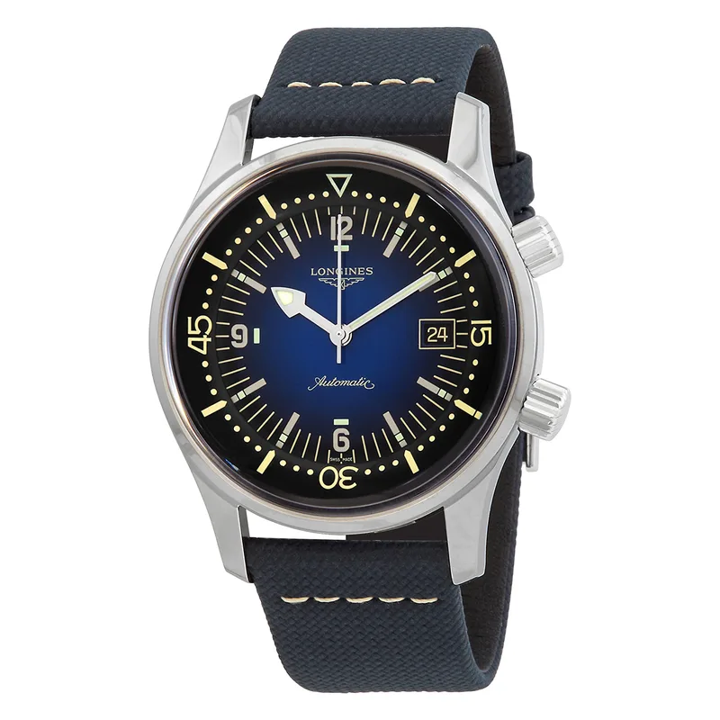

Encyclopedia / Longines / Legend Diver

Current deal · verified Oct 19, 2026, 10:22 PM ET
$2,052 List $2,850
Save $798 (28%) · new · Jomashop
Ref. L3.774.4.90.2 · In stock (per Jomashop)
Brand new from Jomashop, a grey-market (non-authorized) dealer, so expect the store's warranty (Jomashop lists '2 Year Jomashop Warranty') rather than the brand's. Also checked: WatchMaxx $2,138 (10:28 PM ET). 'List' is the retail figure the dealer displays; I could not confirm it on the brand's own US site. Prices change fast; check the store before you buy.
Price comparison: fixed-price listings
| Store | Condition | Box & papers | Asking price | Link | Checked |
|---|---|---|---|---|---|
| Jomashop | new | Yes* | $2,052 | View | Oct 19, 2026 |
| WatchMaxx | new | Yes* | $2,138 | View | Oct 19, 2026 |
| Chrono24 marketplace seller | new | Yes | $2,577 | View | Oct 19, 2026 |
Fixed-price (buy-now) asking prices in USD for ref. L3.774.4.90.2, cheapest new and cheapest pre-owned with box and papers per store, sorted low to high and checked Oct 19, 2026 (ET). Buy-now listings only. Pre-owned listings are shown only when the listing states box and papers. * New from a grey-market dealer: comes boxed, but the warranty card may be the dealer's rather than the brand's. Chrono24 rows are individual third-party marketplace sellers. Prices change fast; confirm with the store.
What it really costs
| Market | Price | Source |
|---|---|---|
| List price per Jomashop & WatchMaxx | $2,850 | jomashop.com |
| New at Jomashop | $2,052 | Jomashop |
| New at WatchMaxx | $2,138 | WatchMaxx |
| Pre-owned (Chrono24 asks) | about $2,050 – $2,750 (median ~$2,350, 19 listings sampled) | Chrono24 |
All prices in USD, checked Oct 19, 2026 (ET). Pre-owned ranges are the middle 80% of asking prices on the first Chrono24 results page for that ref (about 60 listings, used and some unworn), fixed-price listings only. Grey-market = brand-new from a non-authorized dealer.
Buying guide
Key references
| Ref. | What it is | US retail |
|---|---|---|
| L3.774.4.90.2 | Legend Diver Automatic Blue Lacquered Dial Men's Watch | $2,850 |
Which one I'd pick
Size: the L3.774.4.90.2 I priced is 42 mm and 12.7 mm thick (per Jomashop). Google autocomplete shows lots of searches for '39mm' and '36mm' versions too, so confirm the size and ref on any listing.
What to check before you buy
- Warranty: grey-market new watches usually carry the dealer's warranty, not the brand's. Ask which one you get and whether the brand's warranty card is included.
- Exact reference: dial colour, size and strap change the price. Match the full ref (L3.774.4.90.2) before comparing deals.
- Fakes and red flags: be wary of prices far below the ranges above, stock photos only, or sellers who won't show the caseback, serial and papers.
Alternatives worth a look
- Longines HydroConquest: Longines' modern ceramic-bezel diver, cheaper. (41 mm Stainless Steel, Longines Calibre L888, retail $2,000 (list price per Jomashop & WatchMaxx))
- Oris Divers Sixty-Five: Another vintage-style diver. (38 mm Stainless Steel, Oris Calibre 733, retail $3,400 (list price per Jomashop))
- Tudor Black Bay 54: A step up in price. (37 mm steel, Manufacture Calibre MT5400, retail $4,725 (m79000n-0001, per Tudor))
History
Longines was founded in Saint-Imier, Switzerland, in 1832 by Auguste Agassiz; its winged-hourglass logo, registered in 1889, is the oldest unchanged active trademark registered with WIPO.
The Legend Diver L3.774.4.90.2 checked here has a blue lacquered dial and an automatic movement, per Jomashop and WatchMaxx.
Specifications
| Brand | Longines |
|---|---|
| Model | Legend Diver |
| Key references | L3.774.4.90.2 |
| Launch year | Not confirmed |
| Case | 42 mm Stainless Steel |
| Thickness | 12.7 mm |
| Band width | 22 mm |
| Crystal | Scratch Resistant Sapphire |
| Caseback | Solid |
| Bezel | Bi-directional Rotating |
| Bezel material | Stainless Steel |
| Dial | Blue Lacquered |
| Strap/bracelet | (Calfskin) Leather |
| Functions | Date, Hour, Minute, Second |
| Movement | Longines Calibre L888, automatic |
| Power reserve | About 64 hours |
| Water resistance | 300 m |
| Approx. US retail (Oct 2026) | $2,850 (list price per Jomashop & WatchMaxx) |
Specs from the retailer (Jomashop/WatchMaxx) or brand product page linked above for the main reference; see our research notes for which. Retail prices are list prices, not market value, and change often.
Highlights
- Inner rotating bezel
- Automatic movement
- Vintage compressor-style case
FAQ
How much is the Longines Legend Diver?
List price per Jomashop & WatchMaxx: $2,850. New, the best verified price was $2,052 at Jomashop (checked Oct 19, 2026, 10:22 PM ET). Pre-owned asks on Chrono24 mostly ran $2,050 to $2,750.
What movement does the Legend Diver use?
The L3.774.4.90.2 checked here uses the Longines Calibre L888 (automatic) with about 64 hours of power reserve.
How big is the Legend Diver?
42 mm Stainless Steel, 12.7 mm thick.
Is the Legend Diver water resistant?
Yes, it's rated to 300 m.
Want this watch for less?
Every week I hunt down genuine deals on watches like the Legend Diver and send the best ones. Free, one email a week.
Get the free weekly issuePrices and availability last checked Oct 19, 2026. No affiliate links: I don't earn anything if you buy. Sources are listed in our research notes and linked above.